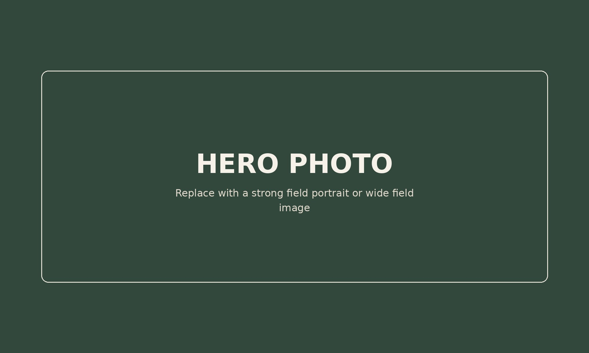
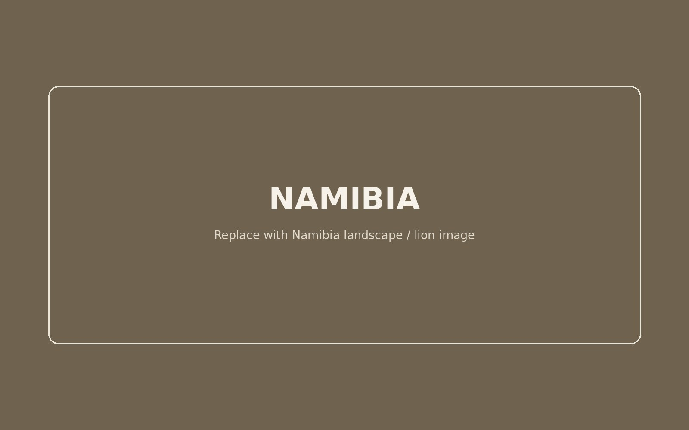
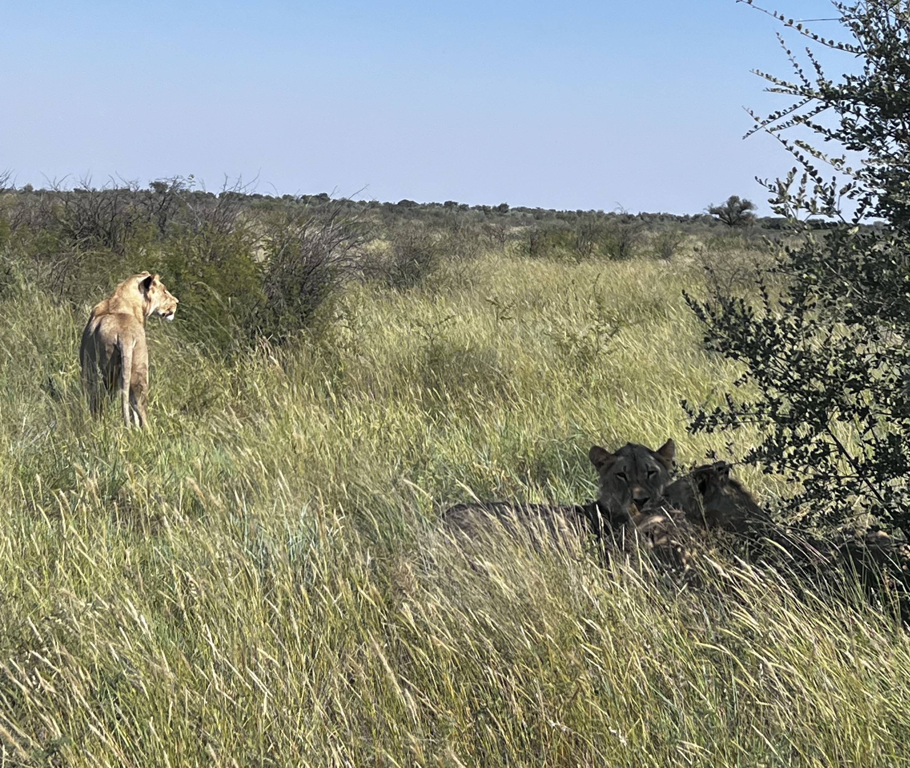
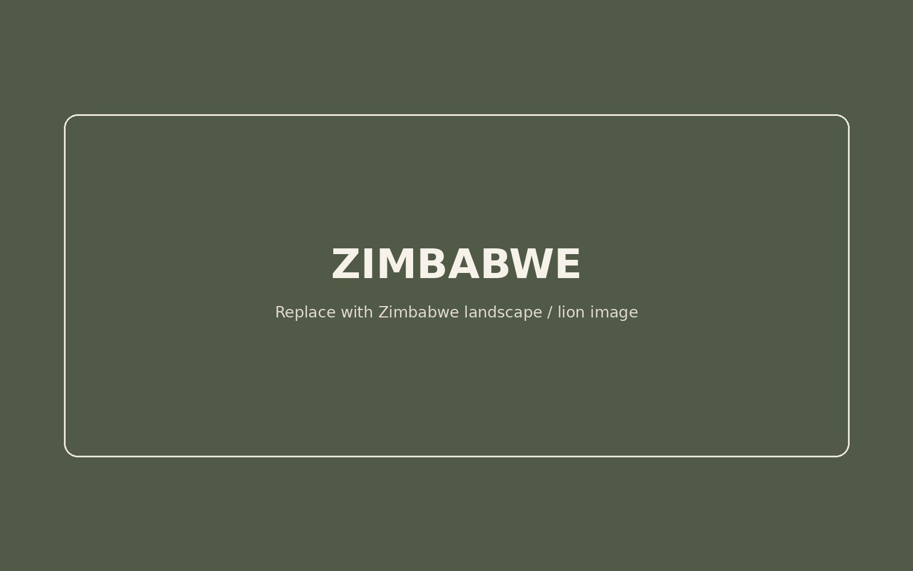
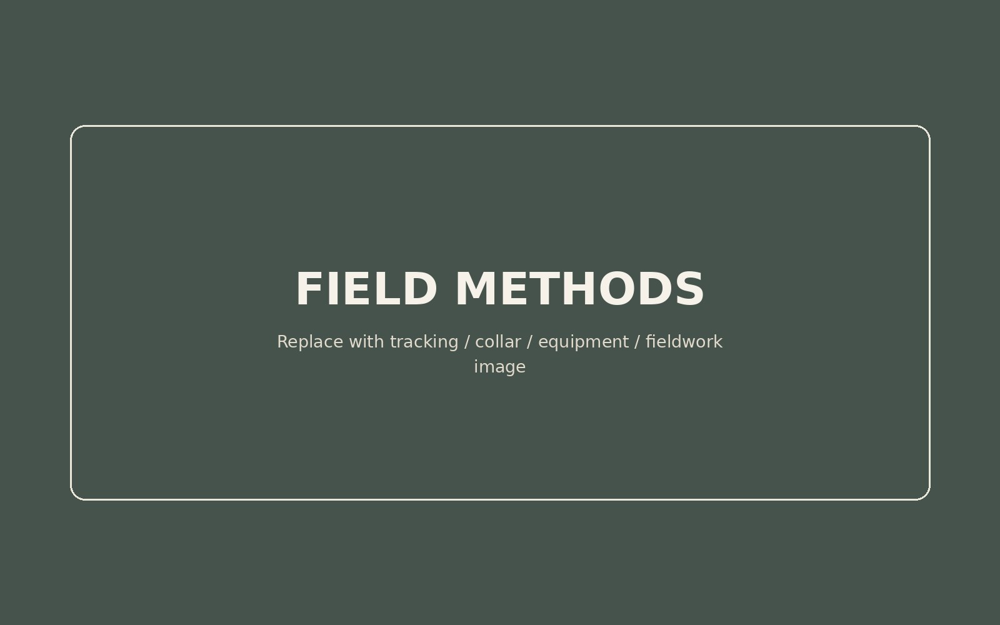

When does sociality emerge or break down?
We compare social structure and cooperation across populations to understand how ecological conditions change the costs and benefits of social living.

Collaborative comparative lion research
One species. Contrasting environments. A shared framework for understanding sociality, collective action, and perception.
We study African lion societies across ecological contexts to ask when social strategies are beneficial, how groups organize collective behaviour, and how individuals acquire and use information to coordinate with others.
Programme co-PIs: Natalia Borrego & Genevieve E. Finerty
The programme
African lions retain a recognizable social architecture across environments that differ dramatically in resource availability, landscape structure, population density, and proximity to people. That flexibility makes them a powerful comparative system for asking which features of social life are stable—and which are reorganized when ecological conditions change.
We compare social structure and cooperation across populations to understand how ecological conditions change the costs and benefits of social living.
We examine movement, communication, cooperative hunting, and role differentiation to understand how collective behaviour emerges from individual decisions.
We combine multi-sensor biologging with sensory experiments to ask how lions perceive sounds, sights, and smells in the contexts of communication and coordination.
Comparative field systems
Across all three populations, whole-group biologging provides a common framework for measuring how lions move, associate, communicate, and act together. Site-specific field knowledge then allows us to interpret those patterns in the ecological context in which they occur.

Namibia
In north-western Namibia, low-density lions move through a semi-arid, mountainous landscape used extensively by people and livestock. Through the co-led Ombonde Research Team, we study how lion societies organize movement and association when resources are sparse, social partners may be widely dispersed, and human activity is part of the landscape rather than a distant boundary.

Botswana
In Botswana, low-density lions occupy a predominantly flat, semi-arid landscape structured by pans and bordered by areas used by people and livestock. Our long-term collaboration with Leopard Ecology & Conservation combines whole-group biologging with San tracking expertise, allowing us to reconstruct hunts, movements, and social interactions that sensors alone cannot reveal.

Zimbabwe
Our Zimbabwe population provides a strong ecological contrast: resources are comparatively abundant, lion density is high, and the study lions are spatially removed from the immediate human-use boundary. This system lets us ask how movement, association, and collective behaviour are organized when groupmates and resources are encountered under very different conditions.
Jointly funded research
The programme has developed through a sequence of jointly led projects: first asking how ecological conditions shape sociality, then resolving the mechanisms of collective action, and now extending that framework to the sensory information animals use before they act.
Sociality across ecological gradients
This project established the comparative foundation of the programme by asking how social structure and cooperation vary across lion populations living under different levels of resource richness. The aim is not simply to describe population differences, but to identify the ecological conditions under which sociality becomes more or less advantageous.
Cooperation in collective action
This project moves from the ecology of sociality to the mechanics of collective action. By collecting fine-scale data simultaneously from entire lion prides, we ask how individuals perceive and communicate information, whether they actively coordinate toward joint aims, and under what conditions specialized roles emerge during cooperative hunting.
Sensory ecology
“What do animals perceive? Advancing Multi-Sensor Biologging for Sensory Ecology Research” extends the programme from observed collective behaviour to the perceptual environment that precedes it. We combine AI-supported analysis of multi-sensor biologging data with controlled experiments on how lions perceive sounds, sights, and smells—particularly in the contexts of communication and coordination.

How we work
No single technology reveals social behaviour on its own. We combine measurements across scales so that movement, interaction, communication, and ecological context can be interpreted together.
People & partnerships
The programme is co-led by Natalia Borrego and Genevieve E. Finerty and depends on long-term scientific, field, and community partnerships across multiple research systems.
Co-Principal Investigator
Behavioural and wildlife ecologist working on social strategies, collective behaviour, cognition, sensory ecology, and comparative field research in African lions.
Co-Principal Investigator
Ecologist working at the interface of spatial and behavioural ecology, with particular interests in animal movement, fission-fusion dynamics, social and spatial structure, and collaborative quantitative research.
Selected programme outputs
Selected papers and scholarly outputs that develop the programme's comparative, methodological, and sensory perspectives.
Addressing ecological and systemic biases in behavioural research through horizontal comparison.
Read publication →Indigenous tracking explores complex lion behaviour in challenging environments.
Read publication →Integrative approaches to studying carnivores in low-density ecosystems.
Read publication →A framework for understanding how groups acquire and use sensory information.
Read publication →